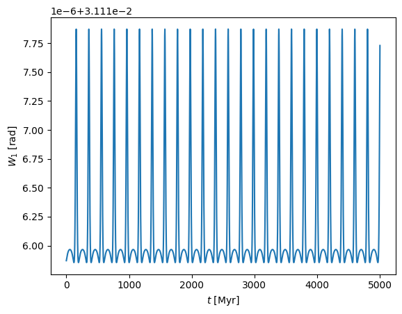
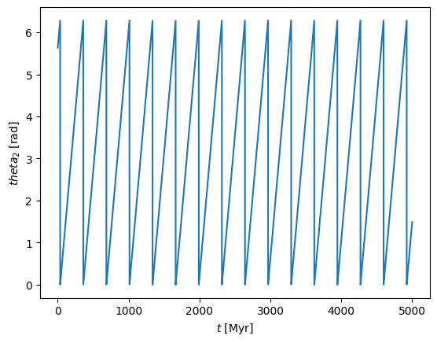
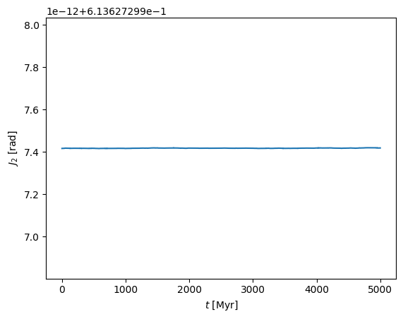

Action–angle variables provide a powerful way to describe stellar orbits in smooth galactic potentials. Instead of tracking position and velocity directly, we transform the motion into conserved quantities (the actions) and their conjugate variables that happen to be linearly increasing quantities (the angles).
This transformation simplifies the description of orbital dynamics, making it easier to analyze long-term evolution and detect resonances or chaotic behavior. I integrated stellar orbits in smooth potentials using gala. Starting from a 3D phase-space point, I evolved the orbit in a flattened logarithmic potential, fit an isochrone toy potential to the orbit, and computed action–angle variables.
In the plots, the frequencies appear with sharp spikes. These are not physical features but numerical artifacts. They occur because the angle variables "wrap around" whenever they exceed \(2\pi\). Each time an angle resets from \(2\pi\) back to 0, the derivative looks discontinuous, producing the spikes. Physically, the orbital frequencies are constant.
The angles vary linearly with time, but because they are periodic, once an angle reaches \(2\pi\) it resets to 0. This produces the sawtooth-like pattern in the plot. If we instead "unwrap" the angles (allowing them to increase beyond \(2\pi\)), the plot would be a straight line with constant slope.
The actions remain nearly constant with only small oscillations, confirming that the orbit is regular and well-behaved in the chosen potential.
